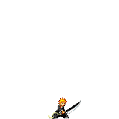

Bleach é um popular anime e mangá de ação e aventura criado por Tite Kubo. A história segue Ichigo Kurosaki, um adolescente que acidentalmente se torna um shinigami, um ser que protege os humanos dos espíritos malignos conhecidos como Hollows. Junto com seus amigos shinigamis, Ichigo luta para proteger sua cidade e seus amigos enquanto enfrenta inimigos cada vez mais poderosos. O anime é conhecido por suas cenas de ação emocionantes, personagens carismáticos e trilha sonora marcante. Além do anime, Bleach também possui uma adaptação para o cinema e várias outras mídias, incluindo jogos de videogame e novels.